Hoofdstuk 9Goniometrische functies
Leerplandoelstellingen (GO! Navigator)
Basisvorming (BV3_06)
-
• BV3_06.02 (MD 06.02) De leerlingen brengen met behulp van de grafiek, kenmerken van een functie in verband met de betekenisvolle situatie die door de functie beschreven wordt.
-
• BV3_06.08 (MD 06.08) De leerlingen tekenen de grafiek van de functie \(f(x)=\sin x\) vanuit de goniometrische cirkel.
-
• BV3_06.09 (MD 06.09) De leerlingen gebruiken transformaties van de vorm \(f(x)+k\), \(f(x-k)\), \(f(x/k)\) en \(k\cdot f(x)\) om de grafiek van een algemene sinusfunctie \(f(x)=a\cdot \sin [b(x-c)]+d\) op te bouwen vanuit de grafiek van \(f(x)=\sin x\).
-
• BV3_06.10 (MD 06.10) De leerlingen analyseren kenmerken van een algemene sinusfunctie aan de hand van de grafiek: domein, bereik, nulwaarden, tekenverloop, stijgen/dalen, extrema, symmetrie, periodiciteit en amplitude.
Gevorderde wiskunde (WD3_06.08)
-
• WD3_06.08.18 (MD 06.08.13) De leerlingen lossen eenvoudige veeltermvergelijkingen, rationale vergelijkingen, irrationale vergelijkingen, exponentiële vergelijkingen, logaritmische vergelijkingen en goniometrische vergelijkingen algebraı̈sch op.
-
– afbakening: deling van veeltermen
-
– afbakening: deling door \((x-a)\)
-
-
• WD3_06.08.21 (MD 06.08.07) De leerlingen leggen het verband tussen de grafiek en het voorschrift van een functie en haar kenmerken.
-
– afbakening: veeltermfuncties, rationale functies, (elementaire) irrationale functies, exponentiële functies, logaritmische functies \(f(x)=\log _a(x)\), goniometrische functies \(f(x)=\cos x\) en \(f(x)=\tan x\), cyclometrische functies, absolute waardenfunctie, meervoudig functievoorschrift
-
– afbakening: domein, bereik, nulwaarden, tekenverloop, stijgen/dalen/constant, extrema, constante/toenemende/afnemende stijging/daling, symmetrie, periode, amplitude, asymptotisch gedrag, gedrag op oneindig
-
-
• WD3_06.08.23 De leerlingen tekenen de grafiek van de functies \(f(x)=\cos x\) en \(f(x)=\tan x\).
Didactische uitwerking: even en oneven functies
Extra uitleg: periodieke functies, periode, amplitude, evenwichtsstand, fase of faseverschil, cotangensfunctie, hol/bol, buigpunten
I Periodieke functies
1 Inleiding
In het dagelijkse leven zijn er heel wat processen die steeds volgens eenzelfde patroon terugkomen. Denk maar aan je hartslagritme, bloeddruk, de trilling van een stemvork, eb en vloed, draaien van een reuzenrad …
2 Voorbeeld
Zie VBTL Analyse 1b: p154 (Hartslag)
Als het hart normaal functioneert, dan spreken we van een sinusritme. Dit is vernoemd naar de sinusknoop in de rechterboezemwand, aangezien elke slag een gevolg is van een elektrische ontlading van deze sinusknoop.
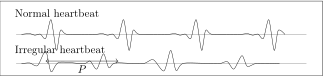
We zien dat een bepaald gedeelte van de grafiek zich steeds herhaalt bij een normale hartslag. Het interval waarbinnen dit gebeurt, noemen we de periode \(P\).
Onder invloed van de hartslag verandert ook je bloeddruk. Vandaar dat een arts altijd een boven- en onderdruk meet. We kunnen dit in een vereenvoudigd model als volgt weergeven.
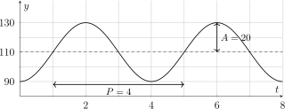
We zien dat de functiewaarden schommelen rond de evenwichtsstand. De grootste uitwijking van de grafiek t.o.v. deze evenwichtsstand noemen we de amplitude \(A\).
In bovenstaande grafiek vinden we een evenwichtsstand voor \(y=110\). De amplitude \(A=20\) en de periode \(P=4\).
3 Definities
Een reële functie \(f\) waarvoor er een strikt positief reëel getal \(P\) bestaat, zodat
\[ \forall x \in \dom f : f(x+P)=f(x), \]
noemen we een periodieke functie.
Het kleinste strikt positieve reële getal \(P\) dat hieraan voldoet, noemen we de periode van de functie.
4 Oefeningen
VBTL Analyse 1b : p 172 nr 1, p173 nr 6
II Elementaire goniometrische functies
1 Sinusfunctie
Toon projectie sinus
Brengen we de waarden van de sinus op de goniometrische cirkel over in een grafiek, dan ontstaat de sinusfunctie
\[ x : \R \to \R : x \mapsto \sin x. \]
Wanneer we dit doen voor hoeken groter dan \(360\degree \), zien we dat de sinusfunctie zich periodiek herhaalt. In wat volgt gaan wij werken met radialen en dan is het eenvoudiger om de \(x\)-as te ijken met breuken van \(\pi \). We noemen deze grafiek de sinusoı̈de.
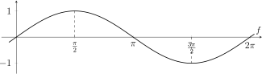
Lees op deze grafiek volgende kenmerken van de sinusfunctie af.
|
domein |
\(\R \) |
|
bereik |
\([-1,1]\) |
|
periode \(P\) |
\(2\pi \) |
|
amplitude \(A\) |
\(1\) |
|
nulwaarden |
\(x=k\pi \), met \(k\in \Z \) |
|
symmetrie |
\(\sin (-x)=-\sin x\): oneven, dus puntsymmetrisch t.o.v. \(O(0,0)\) |
|
tekenverloop |
\(\sin x>0\) op \((0,\pi )+2k\pi \), \(\sin x=0\) voor \(x=k\pi \), \(\sin x<0\) op \((\pi ,2\pi )+2k\pi \) |
|
stijgen/dalen |
stijgend op \(\left (-\frac {\pi }{2},\frac {\pi }{2}\right )+2k\pi \), dalend op \(\left (\frac {\pi }{2},\frac {3\pi }{2}\right )+2k\pi \) |
|
extrema |
maximum \(1\) voor \(x=\frac {\pi }{2}+2k\pi \), minimum \(-1\) voor \(x=\frac {3\pi }{2}+2k\pi \) |
|
hol/bol |
hol op \((\pi ,2\pi )+2k\pi \), bol op \((0,\pi )+2k\pi \) |
|
buigpunten |
\(x=k\pi \), met \(k\in \Z \) |
2 Cosinusfunctie
De grafiek van de cosinusfunctie
\[ x : \R \to \R : x \mapsto \cos x \]
noemen we de cosinusoı̈de. We zien dat deze grafiek ontstaat door de grafiek van de sinusfunctie over \(\frac {\pi }{2}\) eenheden naar links te verschuiven, evenwijdig met de \(x\)-as. Logisch, want
\[ \sin \!\left (x+\frac {\pi }{2}\right )=\cos x. \]
Vul de belangrijkste kenmerken van de cosinusfunctie aan.
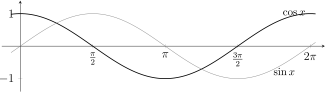
|
domein |
\(\R \) |
|
bereik |
\([-1,1]\) |
|
periode \(P\) |
\(2\pi \) |
|
amplitude \(A\) |
\(1\) |
|
nulwaarden |
\(x=\frac {\pi }{2}+k\pi \), met \(k\in \Z \) |
|
symmetrie |
\(\cos (-x)=\cos x\): even, dus assymmetrisch t.o.v. de \(y\)-as |
|
tekenverloop |
\(\cos x>0\) op \(\left (-\frac {\pi }{2},\frac {\pi }{2}\right )+2k\pi \), \(\cos x=0\) voor \(x=\frac {\pi }{2}+k\pi \), \(\cos x<0\) op \(\left (\frac {\pi }{2},\frac {3\pi }{2}\right )+2k\pi \) |
|
stijgen/dalen |
dalend op \((0,\pi )+2k\pi \), stijgend op \((\pi ,2\pi )+2k\pi \) |
|
extrema |
maximum \(1\) voor \(x=2k\pi \), minimum \(-1\) voor \(x=\pi +2k\pi \) |
|
hol/bol |
hol op \(\left (\frac {\pi }{2},\frac {3\pi }{2}\right )+2k\pi \), bol op \(\left (-\frac {\pi }{2},\frac {\pi }{2}\right )+2k\pi \) |
|
buigpunten |
\(x=\frac {\pi }{2}+k\pi \), met \(k\in \Z \) |
3 Tangensfunctie
De grafiek van de tangensfunctie
\[ x : \R \to \R : x \mapsto \tan x \]
noemen we de tangentoı̈de. Hier vallen ons vooral de vele verticale asymptoten op.
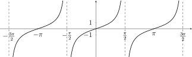
Vul de belangrijkste kenmerken van de tangensfunctie aan.
|
domein |
\(\R \setminus \left \{\frac {\pi }{2}+k\pi \mid k\in \Z \right \}\) |
|
bereik |
\(\R \) |
|
periode \(P\) |
\(\pi \) |
|
amplitude \(A\) |
niet van toepassing |
|
nulwaarden |
\(x=k\pi \), met \(k\in \Z \) |
|
symmetrie |
\(\tan (-x)=-\tan x\): oneven, dus puntsymmetrisch t.o.v. \(O(0,0)\) |
|
tekenverloop |
\(\tan x<0\) op \(\left (-\frac {\pi }{2},0\right )+k\pi \), \(\tan x=0\) voor \(x=k\pi \), \(\tan x>0\) op \(\left (0,\frac {\pi }{2}\right )+k\pi \) |
|
verticale asymptoten |
\(x=\frac {\pi }{2}+k\pi \), met \(k\in \Z \) |
|
stijgen/dalen |
strikt stijgend op elk interval \(\left (-\frac {\pi }{2}+k\pi ,\frac {\pi }{2}+k\pi \right )\) |
|
extrema |
geen |
|
hol/bol |
hol waar \(\tan x<0\), bol waar \(\tan x>0\) |
|
buigpunten |
\(x=k\pi \), met \(k\in \Z \) |
4 Cotangensfunctie
De grafiek van de cotangensfunctie
\[ x : \R \to \R : x \mapsto \cot x \]
noemen we de cotangentoı̈de. Ook hier vallen ons vooral de vele verticale asymptoten op.
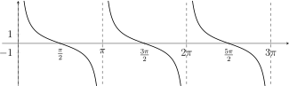
Vul de belangrijkste kenmerken van de cotangensfunctie aan.
|
domein |
\(\R \setminus \left \{k\pi \mid k\in \Z \right \}\) |
|
bereik |
\(\R \) |
|
periode \(P\) |
\(\pi \) |
|
amplitude \(A\) |
niet van toepassing |
|
nulwaarden |
\(x=\frac {\pi }{2}+k\pi \), met \(k\in \Z \) |
|
symmetrie |
\(\cot (-x)=-\cot x\): oneven, dus puntsymmetrisch t.o.v. \(O(0,0)\) |
|
tekenverloop |
\(\cot x>0\) op \((0,\frac {\pi }{2})+k\pi \), \(\cot x=0\) voor \(x=\frac {\pi }{2}+k\pi \), \(\cot x<0\) op \((\frac {\pi }{2},\pi )+k\pi \) |
|
verticale asymptoten |
\(x=k\pi \), met \(k\in \Z \) |
|
stijgen/dalen |
strikt dalend op elk interval \((k\pi ,(k+1)\pi )\) |
|
extrema |
geen |
|
hol/bol |
bol waar \(\cot x<0\), hol waar \(\cot x>0\) |
|
buigpunten |
\(x=\frac {\pi }{2}+k\pi \), met \(k\in \Z \) |
III De algemene sinusfunctie \(y=a\cdot \sin (b\cdot (x-c))+d\)
1 Herhaling
\(x\) en/of \(f(x)\) door parameters beı̈nvloeden:
|
transformatie |
grafische betekenis |
|
\(y=a\cdot f(x)\) met \(a>0\) |
Grafiek ondergaat een verschaling evenwijdig met de \(y\)-as met factor \(a\). Voor \(0<a<1\): een inkrimping Voor \(a>1\): een uitrekking |
|
\(y=f(b\cdot x)\) met \(b>0\) |
Grafiek ondergaat een verschaling evenwijdig met de \(x\)-as met factor \(\frac {1}{b}\). |
|
\(y=f(x-c)\) |
Grafiek ondergaat een verschuiving evenwijdig met de \(x\)-as. Voor \(c>0\): \(|c|\) eenheden naar rechts Voor \(c<0\): \(|c|\) eenheden naar links |
|
\(y=f(x)+d\) |
Grafiek ondergaat een verschuiving evenwijdig met de \(y\)-as. Voor \(d>0\): \(|d|\) eenheden naar boven Voor \(d<0\): \(|d|\) eenheden naar beneden |
Invloed toetstandsteken:
|
De grafiek van |
verkrijgen we door de grafiek van \(y=f(x)\) te |
|
\(y=-f(x)\) |
spiegelen t.o.v. de \(x\)-as |
|
\(y=f(-x)\) |
spiegelen t.o.v. de \(y\)-as |
|
\(y=-f(-x)\) |
spiegelen t.o.v. de oorsprong \(O(0,0)\) |
2 De grafiek van \(y=a\sin x\) met \(a>0\)
We onderzoeken grafisch wat er gebeurt als we in \(y=a\sin x\) de waarde \(a=3\) nemen.
\[ y=\sin x \qquad \text {en} \qquad y=3\sin x \]
Besluit
In de grafiek van \(y=a\sin x\) met \(a>0\) verandert enkel de amplitude.
\[ \boxed {A=a} \]
De periode blijft \(2\pi \) en de nulwaarden blijven
\[ x=k\pi \qquad \text {met } k\in \mathbb {Z}. \]
De grafiek van \(y=\sin x\) ondergaat een verschaling evenwijdig met de \(y\)-as met factor \(a\).
-
• Voor \(0<a<1\): de grafiek wordt ingekrompen.
-
• Voor \(a>1\): de grafiek wordt uitgerekt.
In het voorbeeld \(y=3\sin x\) wordt de grafiek dus verticaal uitgerekt met factor \(3\).
3 De grafiek van \(y=\sin (bx)\) met \(b>0\)
We onderzoeken grafisch wat er gebeurt als we in \(y=\sin (bx)\) de waarde \(b=2\) nemen.
\[ y=\sin x \qquad \text {en} \qquad y=\sin (2x) \]
Besluit
In de grafiek van \(y=\sin (bx)\) met \(b>0\) verandert de periode.
\[ \boxed {P=\frac {2\pi }{b}} \]
De amplitude blijft \(1\). De nulwaarden worden
\[ bx=k\pi \qquad \Leftrightarrow \qquad x=\frac {k\pi }{b} \qquad \text {met } k\in \mathbb {Z}. \]
De grafiek van \(y=\sin x\) ondergaat een verschaling evenwijdig met de \(x\)-as.
-
• Voor \(0<b<1\): de grafiek wordt horizontaal uitgerekt.
-
• Voor \(b>1\): de grafiek wordt horizontaal ingekrompen.
In het voorbeeld \(y=\sin (2x)\) wordt de grafiek horizontaal ingekrompen met factor \(2\). De periode wordt dus \(\pi \).
4 De grafiek van \(y=\sin (x-c)\)
We onderzoeken grafisch wat er gebeurt als we in \(y=\sin (x-c)\) de waarde \(c=\frac {\pi }{3}\) nemen.
\[ y=\sin x \qquad \text {en} \qquad y=\sin \left (x-\frac {\pi }{3}\right ) \]
Besluit
In de grafiek van \(y=\sin (x-c)\) verandert enkel de horizontale ligging van de grafiek.
\[ \boxed {\text {verschuiving over } c \text { naar rechts}} \]
De periode blijft \(2\pi \) en de amplitude blijft \(1\).
De nulwaarden worden
\[ x-c=k\pi \qquad \Leftrightarrow \qquad x=c+k\pi \qquad \text {met } k\in \mathbb {Z}. \]
In het voorbeeld
\[ y=\sin \left (x-\frac {\pi }{3}\right ) \]
wordt de grafiek van \(y=\sin x\) verschoven over \(\frac {\pi }{3}\) naar rechts.
5 De grafiek van \(y=\sin x+d\)
We onderzoeken grafisch wat er gebeurt als we in \(y=\sin x+d\) de waarde \(d=2\) nemen.
\[ y=\sin x \qquad \text {en} \qquad y=\sin x+2 \]
Besluit
In de grafiek van \(y=\sin x+d\) verandert enkel de verticale ligging van de grafiek.
\[ \boxed {\text {verschuiving over } d \text { volgens de } y\text {-as}} \]
De periode blijft \(2\pi \) en de amplitude blijft \(1\).
De evenwichtslijn wordt
\[ \boxed {y=d} \]
In het voorbeeld \(y=\sin x+2\) wordt de grafiek van \(y=\sin x\) verschoven over \(2\) naar boven. De evenwichtslijn wordt dus \(y=2\), en het bereik is
\[ [1,3]. \]
6 Algemeen
De grafiek van de functie
\[ y=a\sin \!\bigl (b \cdot (x-c)\bigr )+d \]
is een sinusoı̈de met volgende kenmerken:
-
• Amplitude \(A=a\)
-
• Periode \(P=\dfrac {2\pi }{b}\)
-
• Fase: \(c\), met een horizontale verschuiving
-
• Evenwichtsstand \(y=d\), met een verticale verschuiving
7 Oefeningen
VBTL Analyse 1b: p173 nr 5, 8-24
IV Goniometrische vergelijkingen
1 Ritje met het reuzenrad
Een reiziger zit in een bakje van een reuzenrad. Het middelpunt van het reuzenrad bevindt zich \(12\) meter boven de grond en het reuzenrad heeft een straal van \(10\) meter. Eén volledige omwenteling duurt \(40\) seconden.
Op tijdstip \(t=0\) zit de reiziger helemaal onderaan.
De hoogte \(h\) van de reiziger boven de grond als functie van de tijd \(t\) kan gemodelleerd worden door:
\[ h(t)=12-10\cos \left (\frac {\pi }{20}t\right ). \]
Wanneer bevindt de reiziger zich op \(17\) meter hoogte?
Dan moeten we de vergelijking
\[ 12-10\cos \left (\frac {\pi }{20}t\right )=17 \]
oplossen.
Grafisch oplossen met de TI-84
We kunnen deze vergelijking grafisch oplossen.
-
• Voer in bij Y=:
\[ Y_1=12-10\cos \left (\frac {\pi }{20}X\right ) \qquad \text {en}\qquad Y_2=17 \]
-
• Kies bijvoorbeeld als venster:
\[ X_{\min }=0,\quad X_{\max }=40,\quad Y_{\min }=0,\quad Y_{\max }=25 \]
-
• Teken de grafieken met GRAPH.
-
• Gebruik daarna 2nd \(\rightarrow \) CALC \(\rightarrow \) intersect.
Zo vinden we twee snijpunten:
\[ t\approx 13.33 \qquad \text {en}\qquad t\approx 26.67. \]
Dus de reiziger bevindt zich na ongeveer \(13.33\) s en \(26.67\) s op \(17\) meter hoogte.
Exact oplossen
\(\seteqnumber{0}{}{0}\)\begin{align*} 12-10\cos \left (\frac {\pi }{20}t\right )&=17 \\ -10\cos \left (\frac {\pi }{20}t\right )&=5 \\ \cos \left (\frac {\pi }{20}t\right )&=-\frac 12 \end{align*}
We weten:
\[ \cos \theta =-\frac 12 \quad \Leftrightarrow \quad \theta =\frac {2\pi }{3}+2k\pi \quad \text {of}\quad \theta =\frac {4\pi }{3}+2k\pi . \]
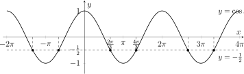
Dus:
\[ \frac {\pi }{20}t=\frac {2\pi }{3}+2k\pi \quad \text {of}\quad \frac {\pi }{20}t=\frac {4\pi }{3}+2k\pi \]
en dus:
\[ t=\frac {40}{3}+40k \quad \text {of}\quad t=\frac {80}{3}+40k. \]
Op het interval \([0,40[\) geeft dit:
\[ t=\frac {40}{3} \qquad \text {of}\qquad t=\frac {80}{3}. \]
2 Definitie
Een goniometrische vergelijking is een vergelijking waarin de onbekende voorkomt in één of meer goniometrische uitdrukkingen, zoals \(\sin x\), \(\cos x\), \(\tan x\) of \(\cot x\).
Een goniometrische vergelijking oplossen betekent alle waarden van de onbekende bepalen waarvoor de vergelijking waar is.
Vaak werken we in twee stappen:
-
• eerst zoeken we de oplossingen op een basisinterval, meestal \([0,2\pi [\),
-
• daarna schrijven we de algemene oplossingen op met behulp van de periodiciteit.
3 Oplossen van basisvergelijkingen
Vergelijkingen van de vorm \(\sin x=a\)
Een vergelijking van de vorm
\[ \sin x=a \]
heeft enkel oplossingen als
\[ -1\leq a\leq 1. \]
Als \(\alpha =\arcsin (a)\), dan geldt:
\[ \sin x=a \quad \Leftrightarrow \quad x=\alpha +2k\pi \quad \text {of}\quad x=\pi -\alpha +2k\pi , \qquad k\in \Z . \]
Voorbeeld
Los op:
\[ \sin x=\frac 12. \]
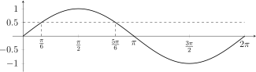
Op \([0,2\pi [\) vinden we:
\[ x=\frac {\pi }{6} \qquad \text {of}\qquad x=\frac {5\pi }{6}. \]
Algemeen:
\[ x=\frac {\pi }{6}+2k\pi \qquad \text {of}\qquad x=\frac {5\pi }{6}+2k\pi , \qquad k\in \Z . \]
Vergelijkingen van de vorm \(\cos x=a\)
Een vergelijking van de vorm
\[ \cos x=a \]
heeft enkel oplossingen als
\[ -1\leq a\leq 1. \]
Als \(\alpha =\arccos (a)\), dan geldt:
\[ \cos x=a \quad \Leftrightarrow \quad x=\alpha +2k\pi \quad \text {of}\quad x=-\alpha +2k\pi , \qquad k\in \Z . \]
Voorbeeld
Los op:
\[ \cos x=-\frac {\sqrt 2}{2}. \]
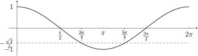
Op \([0,2\pi [\) vinden we:
\[ x=\frac {3\pi }{4} \qquad \text {of}\qquad x=\frac {5\pi }{4}. \]
Algemeen:
\[ x=\frac {3\pi }{4}+2k\pi \qquad \text {of}\qquad x=\frac {5\pi }{4}+2k\pi , \qquad k\in \Z . \]
Vergelijkingen van de vorm \(\tan x=a\)
Voor elke reële waarde \(a\) heeft de vergelijking
\[ \tan x=a \]
oplossingen.
Als \(\alpha =\arctan (a)\), dan geldt:
\[ \tan x=a \quad \Leftrightarrow \quad x=\alpha +k\pi , \qquad k\in \Z . \]
Voorbeeld
Los op:
\[ \tan x=1. \]
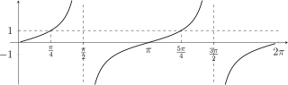
Op \([0,2\pi [\) vinden we:
\[ x=\frac {\pi }{4} \qquad \text {of}\qquad x=\frac {5\pi }{4}. \]
Algemeen:
\[ x=\frac {\pi }{4}+k\pi , \qquad k\in \Z . \]
Oefeningen
VBTL - Analyse 1b: p191 nr1
4 Vergelijkingen herleidbaar naar basisvergelijkingen
Soms staat een vergelijking niet onmiddellijk in een basisvorm, maar kunnen we met behulp van goniometrische formules toch herleiden.
Voorbeeld 1
Los op:
\[ 2\sin x\cos x=\frac {\sqrt 3}{2}. \]
Gebruik hier de formule
\[ \sin (2x)=2\sin x\cos x. \]
\(\seteqnumber{0}{}{0}\)\begin{align*} 2\sin x\cos x&=\frac {\sqrt 3}{2} \\ \Leftrightarrow \quad \sin (2x)&=\frac {\sqrt 3}{2} \end{align*}
Dus:
\[ 2x=\frac {\pi }{3}+2k\pi \qquad \text {of}\qquad 2x=\frac {2\pi }{3}+2k\pi . \]
Daaruit volgt:
\[ x=\frac {\pi }{6}+k\pi \qquad \text {of}\qquad x=\frac {\pi }{3}+k\pi , \qquad k\in \Z . \]
Op \([0,2\pi [\) geeft dit:
\[ x=\frac {\pi }{6},\ \frac {\pi }{3},\ \frac {7\pi }{6},\ \frac {4\pi }{3}. \]
Voorbeeld 2
Los op:
\[ \cos ^2 x-\sin ^2 x=-\frac 12. \]
Gebruik hier de formule
\[ \cos (2x)=\cos ^2 x-\sin ^2 x. \]
\(\seteqnumber{0}{}{0}\)\begin{align*} \cos ^2 x-\sin ^2 x&=-\frac 12 \\ \Leftrightarrow \quad \cos (2x)&=-\frac 12 \end{align*}
Dus:
\[ 2x=\frac {2\pi }{3}+2k\pi \qquad \text {of}\qquad 2x=\frac {4\pi }{3}+2k\pi . \]
Daaruit volgt:
\[ x=\frac {\pi }{3}+k\pi \qquad \text {of}\qquad x=\frac {2\pi }{3}+k\pi , \qquad k\in \Z . \]
Op \([0,2\pi [\) geeft dit:
\[ x=\frac {\pi }{3},\ \frac {2\pi }{3},\ \frac {4\pi }{3},\ \frac {5\pi }{3}. \]
Werkwijze
Bij dit soort vergelijkingen is het vaak nuttig om eerst te zoeken naar:
-
• dubbele-hoekformules,
-
• formules zoals \(\sin ^2 x+\cos ^2 x=1\),
-
• productformules of somformules.
Zo proberen we de vergelijking te herleiden tot één van de basisvormen
\[ \sin u=a,\qquad \cos u=a,\qquad \tan u=a. \]
Oefeningen
VBTL - Analyse 1b: p191 nr2
5 Vergelijkingen met eenvoudige substituties
Soms bevat een vergelijking meerdere machten van dezelfde goniometrische functie. Dan kan een substitutie handig zijn.
Voorbeeld 1
Los op:
\[ 2\sin ^2 x-3\sin x+1=0. \]
We stellen:
\[ u=\sin x. \]
Dan wordt de vergelijking:
\[ 2u^2-3u+1=0. \]
We ontbinden:
\[ 2u^2-3u+1=(2u-1)(u-1). \]
Dus:
\[ u=\frac 12 \qquad \text {of}\qquad u=1. \]
Omdat \(u=\sin x\), krijgen we:
\[ \sin x=\frac 12 \qquad \text {of}\qquad \sin x=1. \]
Dus:
\[ x=\frac {\pi }{6}+2k\pi ,\quad \frac {5\pi }{6}+2k\pi ,\quad \frac {\pi }{2}+2k\pi , \qquad k\in \Z . \]
Op \([0,2\pi [\) geeft dit:
\[ x=\frac {\pi }{6},\ \frac {\pi }{2},\ \frac {5\pi }{6}. \]
Voorbeeld 2
Los op:
\[ \tan ^2 x-3\tan x+2=0. \]
We stellen:
\[ u=\tan x. \]
Dan wordt de vergelijking:
\[ u^2-3u+2=0. \]
Dus:
\[ (u-1)(u-2)=0 \]
en bijgevolg:
\[ u=1 \qquad \text {of}\qquad u=2. \]
Omdat \(u=\tan x\), krijgen we:
\[ \tan x=1 \qquad \text {of}\qquad \tan x=2. \]
Dus:
\[ x=\frac {\pi }{4}+k\pi \qquad \text {of}\qquad x=\arctan (2)+k\pi , \qquad k\in \Z . \]
Op \([0,2\pi [\) geeft dit:
\[ x=\frac {\pi }{4},\ \frac {5\pi }{4},\ \arctan (2),\ \arctan (2)+\pi . \]
Opmerking
Na een substitutie moeten we altijd terugkeren naar de oorspronkelijke goniometrische vergelijking.
Bovendien moeten we rekening houden met de mogelijke waarden:
\[ -1\leq \sin x\leq 1, \qquad -1\leq \cos x\leq 1. \]
Als we bijvoorbeeld na substitutie \(u=3\) vinden bij \(u=\sin x\), dan levert dit geen oplossing op.
Oefeningen
VBTL - Analyse 1b: p191 nr3
6 Stappenplan
Bij het oplossen van goniometrische vergelijkingen is volgende aanpak nuttig:
-
1. Herleid de vergelijking zo veel mogelijk.
-
2. Zoek of ze een basisvorm heeft:
\[ \sin x=a,\qquad \cos x=a,\qquad \tan x=a. \]
-
3. Gebruik eventueel goniometrische formules.
-
4. Gebruik eventueel een substitutie.
-
5. Bepaal eerst de oplossingen op een basisinterval, bijvoorbeeld \([0,2\pi [\).
-
6. Schrijf daarna de algemene oplossingen op met behulp van de periode.
7 Oefeningen
VBTL - Analyse 1b: p191 nr1, 2, 3, 4, 6, 7, 8, 9
V Goniometrische ongelijkheden
1 Definitie
Een goniometrische ongelijkheid is een ongelijkheid waarin de onbekende voorkomt in een goniometrische uitdrukking, zoals \(\sin x\), \(\cos x\), \(\tan x\) of \(\cot x\).
Voorbeelden zijn:
\[ \sin x \leq \frac 12, \qquad \tan x > 1, \qquad 2\sin \left (4\left (x-\frac {\pi }{3}\right )\right )+2>3. \]
Een goniometrische ongelijkheid oplossen betekent alle waarden van \(x\) zoeken waarvoor de ongelijkheid waar is.
2 Werkwijze
Bij goniometrische ongelijkheden werken we meestal in drie stappen.
-
1. Vervang de ongelijkheid eerst door een vergelijking.
\[ \sin x \leq \frac 12 \qquad \longrightarrow \qquad \sin x = \frac 12 \]
Zo vinden we de grenspunten.
-
2. Kijk op de goniometrische cirkel of op de grafiek aan welke kant van de grenspunten de ongelijkheid klopt.
-
3. Schrijf de oplossingen op en gebruik de periode.
Let goed op het verschil tussen strikte en niet-strikte ongelijkheden.
\[ < \text { en } > \quad \Rightarrow \quad \text {grenspunten niet meenemen} \]
\[ \leq \text { en } \geq \quad \Rightarrow \quad \text {grenspunten wel meenemen} \]
Bij \(\tan x\) en \(\cot x\) worden verticale asymptoten nooit meegenomen.
3 Voorbeeld 1
Los op:
\[ \sin x \leq \frac 12. \]
Oplossing
We zoeken eerst de grenspunten.
\[ \sin x = \frac 12 \]
We weten:
\[ \sin x=\frac 12 \quad \Leftrightarrow \quad x=\frac {\pi }{6}+2k\pi \quad \text {of}\quad x=\frac {5\pi }{6}+2k\pi , \qquad k\in \Z . \]
Dus:
\[ V= \left \{ x\in \R \ \middle |\ -\frac {7\pi }{6}+2k\pi \leq x\leq \frac {\pi }{6}+2k\pi \text { met } k\in \Z \right \}. \]
Grafische interpretatie
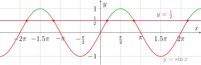
De rode stukken liggen onder of op de rechte \(y=\frac 12\). Daarom horen ze bij de oplossing.
4 Voorbeeld 2
Los op:
\[ \tan x \leq \frac {\sqrt 3}{3}. \]
Oplossing
We zoeken eerst de grenspunten:
\[ \tan x=\frac {\sqrt 3}{3} \quad \Leftrightarrow \quad x=\frac {\pi }{6}+k\pi , \qquad k\in \Z . \]
De tangensfunctie is strikt stijgend op elk interval \(\left ]-\frac {\pi }{2}+k\pi ,\frac {\pi }{2}+k\pi \right [. \)
\[ \Rightarrow \qquad \tan x \leq \frac {\sqrt 3}{3} \quad \Leftrightarrow \quad -\frac {\pi }{2}+k\pi < x \leq \frac {\pi }{6}+k\pi . \]
Dus:
\[ V= \left \{ x\in \R \ \middle |\ -\frac {\pi }{2}+k\pi < x \leq \frac {\pi }{6}+k\pi \text { met } k\in \Z \right \}. \]
Een verticale asymptoot wordt nooit meegenomen. Dus links een strikte ongelijkheid.
Op het interval \([0,2\pi [\) kunnen we dezelfde oplossing ook zo lezen:
\[ 0\leq x\leq \frac {\pi }{6} \quad \text {of}\quad \frac {\pi }{2}<x\leq \frac {7\pi }{6} \quad \text {of}\quad \frac {3\pi }{2}<x<2\pi . \]
Algemeen schrijven we dit korter als:
\[ -\frac {\pi }{2}+k\pi < x \leq \frac {\pi }{6}+k\pi . \]
Grafische interpretatie
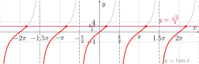
5 Voorbeeld 3
Los op:
\[ 2\sin \left (4\left (x-\frac {\pi }{3}\right )\right )+2>3. \]
Oplossing
We herleiden eerst naar een eenvoudige ongelijkheid.
\(\seteqnumber{0}{}{0}\)\begin{align*} 2\sin \left (4\left (x-\frac {\pi }{3}\right )\right )+2&>3\\ 2\sin \left (4\left (x-\frac {\pi }{3}\right )\right )&>1\\ \sin \left (4\left (x-\frac {\pi }{3}\right )\right )&>\frac 12 \end{align*}
We stellen tijdelijk:
\[ u=4\left (x-\frac {\pi }{3}\right ). \]
Dan moeten we oplossen:
\[ \sin u>\frac 12. \]
Op de goniometrische cirkel zien we:
\[ \sin u>\frac 12 \quad \Leftrightarrow \quad \frac {\pi }{6}+2k\pi <u<\frac {5\pi }{6}+2k\pi , \qquad k\in \Z . \]
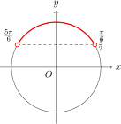
Nu keren we terug naar \(x\).
\(\seteqnumber{0}{}{0}\)\begin{align*} \frac {\pi }{6}+2k\pi &< 4\left (x-\frac {\pi }{3}\right ) < \frac {5\pi }{6}+2k\pi \\[2mm] \frac {\pi }{6}+2k\pi &< 4x-\frac {4\pi }{3} < \frac {5\pi }{6}+2k\pi \\[2mm] \frac {\pi }{6}+\frac {4\pi }{3}+2k\pi &< 4x < \frac {5\pi }{6}+\frac {4\pi }{3}+2k\pi \\[2mm] \frac {3\pi }{2}+2k\pi &< 4x < \frac {13\pi }{6}+2k\pi \\[2mm] \frac {3\pi }{8}+k\frac {\pi }{2} &< x < \frac {13\pi }{24}+k\frac {\pi }{2}. \end{align*}
Dus:
\[ V= \left \{ x\in \R \ \middle |\ \frac {3\pi }{8}+k\frac {\pi }{2} < x < \frac {13\pi }{24}+k\frac {\pi }{2} \text { met } k\in \Z \right \}. \]
Bij benadering:
\[ V= \left \{ x\in \R \ \middle |\ 1.1781+k\frac {\pi }{2} < x < 1.7017+k\frac {\pi }{2} \text { met } k\in \Z \right \}. \]
Grafische interpretatie
We tekenen de grafiek van
\[ f(x)=2\sin \left (4\left (x-\frac {\pi }{3}\right )\right )+2 \]
en de rechte \(y=3\).
De oplossingen liggen waar de grafiek van \(f\) boven de rechte \(y=3\) ligt.
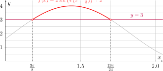
Omdat de ongelijkheid strikt is, nemen we de snijpunten zelf niet mee.
6 Samenvatting
Bij goniometrische ongelijkheden gebruiken we dezelfde kennis als bij goniometrische vergelijkingen.
|
Stap 1 |
Zoek de grenspunten door de bijhorende vergelijking op te lossen. |
|
Stap 2 |
Kijk op de cirkel of grafiek waar de ongelijkheid klopt. |
|
Stap 3 |
Let op open of gesloten grenzen. |
|
Stap 4 |
Gebruik de periode om alle oplossingen te noteren. |
Bij \(\sin x\) en \(\cos x\) is de periode \(2\pi \).
Bij \(\tan x\) en \(\cot x\) is de periode \(\pi \).
Bij een samengestelde hoek, zoals
\[ \sin \left (4\left (x-\frac {\pi }{3}\right )\right ), \]
los je best eerst op alsof de hele binnenkant één nieuwe onbekende is. Daarna keer je terug naar \(x\).
7 Oefeningen
VBTL - Analyse 1b: p192 nr 10
Toetsen/Examens, enkel grafisch kunnen.